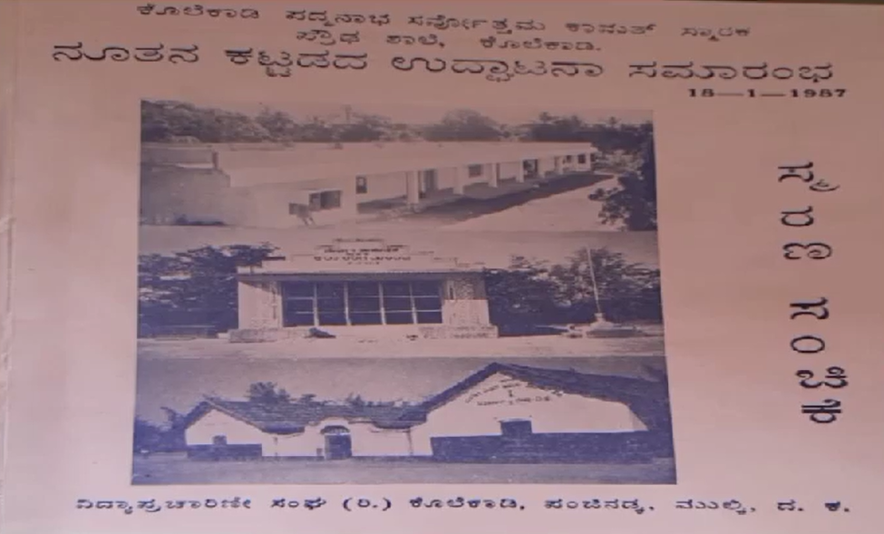
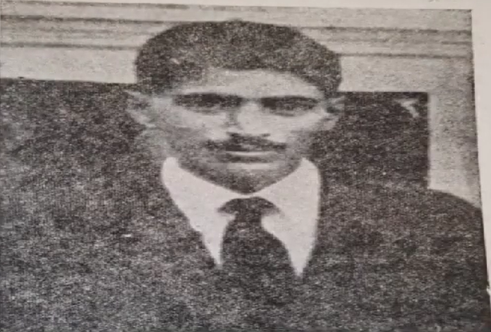
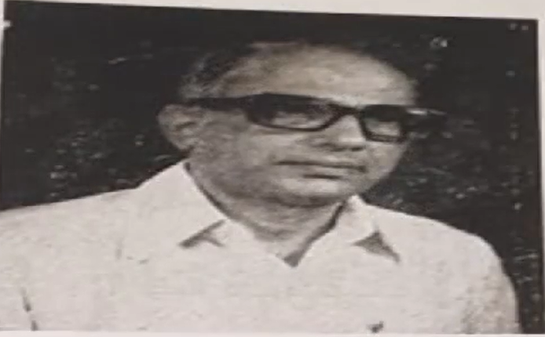
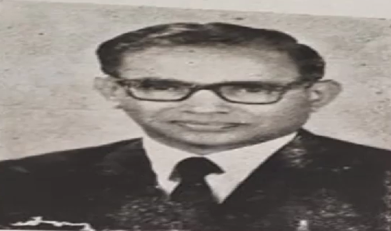
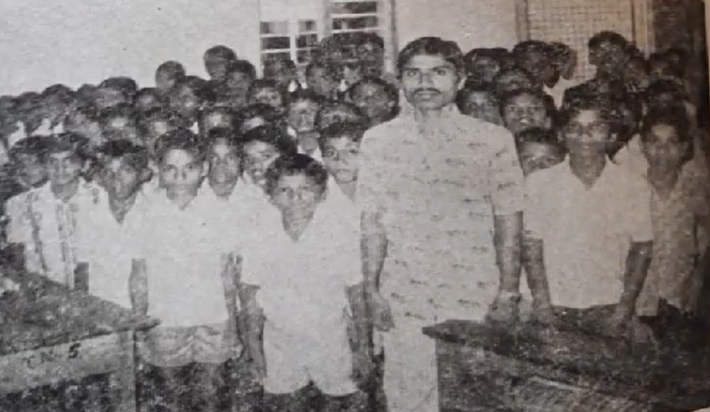
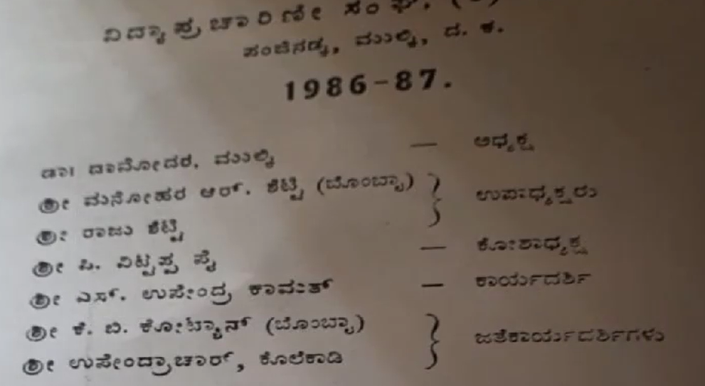

<div class="container text-center">
  <div class="row">
    <div class="col-xl-4 col-lg-4 col-md-6 col-sm-12 col-xs-12">
      
      <p class="image-desc">ಹೈಸ್ಕೂಲ್ ಕಟ್ಟಡದ ಉದ್ಘಾಟನೆ, 1987</p>
      
      <p class="image-desc">ಕೆ ಪದ್ಮನಾಭ ಸರ್ವೋತ್ತಮ ಕಾಮತ್</p>
      
      <p class="image-desc">ಗೋಪಾಲಕೃಷ್ಣ ಕಾಮತ್</p>
      
      <p class="image-desc">ಸೀತಾರಾಮ್ ಎಸ್ ಕಾಮತ್</p>
      
      <p class="image-desc">ಮೊದಲ ಪ್ರೌಢಶಾಲಾ ಬ್ಯಾಚ್, 1987</p>
      
      <p class="image-desc">ವಿದ್ಯಾ ಪ್ರಚಾರಣೀ ಸಂಘ (ರಿ) ಕೊಲೆಕಾಡಿ</p>
    </div>
    <div class="col-xl-8 col-lg-8 col-md-6 col-sm-12 col-xs-12">
      <p class="history-lines">
        ದಕ್ಷಿಣ ಕನ್ನಡ ಜಿಲ್ಲೆಯ ಮಂಗಳೂರಿನ ಮುಲ್ಕಿ ತಾಲೂಕು ಮತ್ತು ಹೋಬಳಿಯ ಅತಿಕಾರಿಬೆಟ್ಟು
        ಗ್ರಾಮದ ಕೊಲೆಕಾಡಿ ಪಂಜಿನಡ್ಕ ಪ್ರದೇಶದಲ್ಲಿರುವ ಅನುದಾನಿತ ಕೊಲಕಾಡಿ ಹಿರಿಯ ಪ್ರಾಥಮಿಕ
        ಶಾಲೆ ಹಾಗೂ ಅನುದಾನಿತ ಕೆ.ಪಿ.ಎಸ್.ಕೆ. ಸ್ಮಾರಕ ಪ್ರೌಢಶಾಲೆಗಳು ಮುಲ್ಕಿಯಿಂದ 3 ಕಿಲೋ
        ಮೀಟರ್ ಗ್ರಾಮೀಣ ಪ್ರದೇಶದಲ್ಲಿ ಕಾರ್ಯನಿರ್ವಹಿಸುತ್ತಿರುವ ಕನ್ನಡ ಮಾಧ್ಯಮ
        ಶಾಲೆಗಳಾಗಿವೆ.
      </p>
      <p class="history-lines">
        ಕೊಲೆಕಾಡಿ ಹಿರಿಯ ಪ್ರಾಥಮಿಕ ಶಾಲೆಯು 1924ರಲ್ಲಿ ಕೊಲೆಕಾಡಿ ಗುತ್ತು ಮನೆತನದವರಾದ
        ಶ್ರೀಯುತ ಕೆ.ಪಿ.ಕಾಮತ್ ಅವರಿಂದ ಸ್ಥಾಪಿಸಲ್ಪಟ್ಟು 1ನೆಯ ತರಗತಿಯಿಂದ 7ನೆಯ
        ತರಗತಿಯವರೆಗೆ ಪ್ರಾಥಮಿಕ ಶಿಕ್ಷಣವನ್ನು ಇಂದಿನವರೆಗೂ ನೀಡುತ್ತಾ ಬಂದಿದೆ.
        ಶ್ರೀ.ಸೀತಾರಾಮ ಕಾಮತ್, ಉಪೇಂದ್ರ ಕಾಮತ್ ಮತ್ತು ಗಣಪತಿ ಶೆಣೈರವರ ಕನಸಿನ ಕೂಸು ಎಂಬಂತೆ
        “ಕೊಲಕಾಡಿ ಖಾಸಗಿ ಪ್ರೌಢಶಾಲೆ” ಈಗಿನ ಕೊಲೆಕಾಡಿ ಪದ್ಮನಾಭ ಸರ್ವೋತ್ತಮ ಕಾಮತ್ ಅನುದಾನಿತ
        ಕೆ.ಪಿ.ಎಸ್.ಕೆ. ಸ್ಮಾರಕ ಪ್ರೌಢಶಾಲೆಯು ಆರಂಭಗೊಂಡು 8ನೆಯ ತರಗತಿಯಿಂದ 10ನೆಯ
        ತರಗತಿಯವರೆಗೆ ಪ್ರೌಢ ಶಾಲಾ ಶಿಕ್ಷಣವನ್ನು ಇಂದಿನವರೆಗೂ ನೀಡುತ್ತಾ ಬಂದಿರುವ ವಿದ್ಯಾ
        ಸಂಸ್ಥೆಗಳಾಗಿವೆ.
      </p>
      <p class="history-lines">
        ಪ್ರಾರಂಭದ ಅವಧಿಗಳಲ್ಲಿ ಕೊಲೆಕಾಡಿ ಹಿರಿಯ ಪ್ರಾಥಮಿಕ ಶಾಲೆಯಲ್ಲಿ 1 ರಿಂದ 7ನೆಯ
        ತರಗತಿಯವರೆಗೆ 500 ಮಂದಿ ವಿದ್ಯಾರ್ಥಿಗಳು ಇರುತ್ತಿದ್ದರು. ಪ್ರಾಥಮಿಕ ಶಾಲೆಯಲ್ಲಿ
        ಶ್ರೀ.ಗಣಪತಿ ಮಾಸ್ಟರ್, ಶ್ರೀ.ಉಪೇಂದ್ರ ಮಾಸ್ಟರ್, ಶ್ರೀ.ತಿಮ್ಮಪ್ಪ ಮಾಸ್ಟರ್,
        ಶ್ರೀ.ರಾಜು ಮಾಸ್ಟರ್, ಶ್ರೀ.ಬಾಲಕೃಷ್ಣ ಮಾಸ್ಟರ್, ಶ್ರೀ.ರಾಗು ಮಾಸ್ಟರ್,
        ಶ್ರೀ.ವಿಟ್ಟಪ್ಪ ಮಾಸ್ಟರ್, ಶ್ರೀಮತಿ ಪುಷ್ಪ ಟೀಚರ್, ಶ್ರೀಮತಿ ಅನ್ನಪೂರ್ಣೇಶ್ವರಿ
        ಟೀಚರ್, ಶ್ರೀ.ಸಿಪ್ರಿಯನ್ ಮಾಸ್ಟರ್, ಶ್ರೀ.ಗೋಪಾಲ ಮಾಸ್ಟರ್, ಶ್ರೀ.ಮಹಾಬಲ ಮಾಸ್ಟರ್,
        ಶ್ರೀಮತಿ ಮೇರಿ ಟೀಚರ್, ಶ್ರೀ.ವಿಠ್ಠಲ ಕಾಮತ್ ಮಾಸ್ಟರ್, ಶ್ರೀ.ಅಚ್ಚುತ ಜಿ. ಮಾಸ್ಟರ್,
        ಶ್ರೀ.ಶಂಕರ ಮಾಸ್ಟರ್, ಶ್ರೀ.ಶೇಕರ ಮಾಸ್ಟರ್, ಶ್ರೀ.ಅಂಬರೀಶ್ ಲಂಬಾಣಿ ಮುಂತಾದವರು
        ಶಿಕ್ಷಕರಾಗಿದ್ದವರು. ತಾತ್ಕಾಲಿಕ ನೇಮಕಾತಿಯಡಿ ಶ್ರೀಮತಿ ಶಕುಂತಳ, ಶ್ರೀಮತಿ
        ಮಿಥಿಲಾಕ್ಷಿ, ಶ್ರೀಮತಿ ರೇಖಾ ಮತ್ತು ಶ್ರೀಮತಿ 5555 ರವರು ಬೋಧಿಸುತ್ತಿರುವರು.
      </p>
      <p class="history-lines">
        ಪ್ರಾರಂಭದ ಅವಧಿಗಳಲ್ಲಿ ಅನುದಾನಿತ ಕೆ.ಪಿ.ಎಸ್.ಕೆ. ಸ್ಮಾರಕ ಪ್ರೌಢಶಾಲೆಯಲ್ಲಿ 8 ರಿಂದ
        10ನೆಯ ತರಗತಿಯವರೆಗೆ 180 ಮೀರಿ ವಿದ್ಯಾರ್ಥಿಗಳು ಇರುತ್ತಿದ್ದರು. ಪ್ರೌಢ ಶಾಲೆಯಲ್ಲಿ
        ಗಣಿತ ಶಿಕ್ಷಕರಾಗಿ ಶ್ರೀ.ವಸಂತ ಕುಮಾರ್, ವಿಜ್ಞಾನ ಶಿಕ್ಷಕರಾಗಿ ಶ್ರೀ.ನಾಗಭೂಷಣ ರಾವ್,
        ಇಂಗ್ಲೀಷ್ ಶಿಕ್ಷಕಿಯಾಗಿ ಶ್ರೀಮತಿ. ಗ್ರೆಟ್ಟಾ ರೊಡ್ರಿಗಸ್, ಕನ್ನಡ ಶಿಕ್ಷಕರಾಗಿ
        ಶ್ರೀ.ಕೇಶವ, ಸಮಾಜ ಶಿಕ್ಷಕರಾಗಿ ಶ್ರೀ.ನೋಣಯ್ಯ ರೇಂಜಾಳ, ಹಿಂದಿ ಶಿಕ್ಷಕರಾಗಿ
        ಶ್ರೀ.ಚಂದ್ರಶೇಖರ ರಾಥೋಡ್, ಕಲಾ ಶಿಕ್ಷಕರಾಗಿ ಶ್ರೀ.ವೆಂಕಟರಮಣ ಕಾಮತ್, ದೈಹಿಕ
        ಶಿಕ್ಷಕರಾಗಿ ಶ್ರೀ.ರಾಮಕೃಷ್ಣ, ಗುಮಾಸ್ತರಾಗಿ ಶ್ರೀ.ಮನೋಹರ, ಜವಾನರಾಗಿ ಶ್ರೀ.ವಾಮನ,
        ವಾಚ್ ಮನ್ ಆಗಿ ಶ್ರೀ.ರಾಮಣ್ಣ ನಾಯ್ಕ್ ಸೇವೆ ಸಲ್ಲಿಸಿರುವವರು. ತಾತ್ಕಾಲಿಕ ನೇಮಕಾತಿಯಡಿ
        ಶ್ರೀಮತಿ ಅರ್ಪಣ ಮತ್ತು ಶ್ರೀಮತಿ ಪ್ರತಿಭಾ ರವರು ಬೋಧಿಸುತ್ತಿದ್ದಾರೆ.
      </p>
      <p class="history-lines">
        ಕೊಲೆಕಾಡಿ ಹಿರಿಯ ಪ್ರಾಥಮಿಕ ಶಾಲೆಯ ಡಿಬೆಟ್ ಬಗ್ಗೆ ಅಲ್ಲಿ ಕಲಿತ ಹೆಚ್ಚಿನ
        ವಿದ್ಯಾರ್ಥಿಗಳಿಗೆ ತಿಳಿದೇ ಇದೆ. ಅಲ್ಲದೆ ಉಭಯ ಶಾಲೆಗಳಲ್ಲಿ ಯಕ್ಷಗಾನ, ನಾಟಕ ತರಬೇತಿ
        ನೀಡುತ್ತಿದ್ದರಿಂದ; ಆ ಕಾರಣದಿಂದಾಗಿ ಇಂದು ಕಲಾವಿದರಾಗಿ ಮಿಂಚುತ್ತಿರುವ ಹಲವಾರು
        ಉದಾಹರಣೆಗಳಿವೆ. ಕಲಾ ಕ್ಷೇತ್ರದಲ್ಲಿ ಹೆಸರುವಾಸಿಯಾಗಿರುವ “ವೆಂಕಿ ಪಲಿಮಾರು”ರವರು ನಮ್ಮ
        ಶಾಲೆಯ ಕಲಾ ಶಿಕ್ಷಕರಾಗಿರುವುದು ನಮ್ಮ ಶಾಲೆಯ ಹೆಮ್ಮೆಯಾಗಿದೆ. ಕಲಾ ಶಿಕ್ಷಕರ ಕಲೆಯನ್ನು
        ಆಸ್ವಾದಿಸಲು ಶಾಲೆ ಭೇಟಿ ನೀಡಿದರೆ ಮನಸೂರೆಗೊಳ್ಳುತ್ತದೆ. ಕ್ರೀಡಾ ಕ್ಷೇತ್ರದಲ್ಲೂ
        ಕೀರ್ತಿಯನ್ನು ಪಡೆದ ಹೆಮ್ಮೆ ನಮ್ಮ ಶಾಲೆಗಿದೆ.
      </p>
      <p class="history-lines">
        ಅನುದಾನಿತ ಕೆ.ಪಿ.ಎಸ್.ಕೆ. ಸ್ಮಾರಕ ಪ್ರೌಢಶಾಲೆಯ ಪ್ರಾರಂಭದಲ್ಲಿ ಶಾಲೆಯ ಭದ್ರತಾ
        ನಿಧಿಗೆ ಶ್ರೀ. ಸೀತಾರಾಮ ಯಸ್. ಕಾಮತ್ ಅವರು ರೂ.50000 ಉದಾರ ಧನಸಹಾಯ ನೀಡಿದ್ದರು.
        ಶ್ರೀ. ಕೆ. ಗೋಪಾಲಕೃಷ್ಣ ಕಾಮತ್ ಅವರು ಪ್ರೌಢಶಾಲಾ ಕಟ್ಟಡಕ್ಕೆ 55 ಸೆಂಟ್ಸ್ ಜಮೀನನ್ನು
        ದಾನ ರೂಪದಲ್ಲಿ ನೀಡಿದ ಮಹಾನೀಯರು. ಸದ್ರಿ ಪ್ರೌಢಶಾಲಾ ಕಟ್ಟಡಕ್ಕೆ ಶ್ರೀ. ಮನೋಹರ ಆರ್.
        ಶೆಟ್ಟಿ, ಕ್ವಾಲಿಟಿ ಲ್ಯಾಬ್ ಪ್ರೈವೇಟ್ ಲಿಮಿಟೆಡ್ ಮುಂಬೈ ಮತ್ತು ಶ್ರೀ.ಓ.ಭಾಸ್ಕರ
        ಶೆಟ್ಟಿ, ತೋಕೂರುಗುತ್ತು, ಮುಂಬೈ ಇವರುಗಳು ರೂ.25000ಕ್ಕಿಂತ ಹೆಚ್ಚು ಧನಸಹಾಯವನ್ನು
        ನೀಡಿ ಸಹಕರಿಸಿದ್ದರು. ಶ್ರೀ.ಬೋಳ ಗೋವಿಂದ ರಾವ್, ಶ್ರೀ.ಸದಾಶಿವ ಶೆಟ್ಟಿ, ಶ್ರೀ.ನಾರಾಯಣ
        ಸಿ. ಶೆಟ್ಟಿ, ಶ್ರೀ. ಶೇಖರ ಶೆಟ್ಟಿ ಎಳತ್ತೂರು ಗುತ್ತು, ಶ್ರೀ.ಎನ್. ಜಯ ಶೆಟ್ಟಿ,
        ಶ್ರೀ.ಜಗದೀಶ ಪ್ರಭು ಪನಿಕೆರೆ, ಇನ್ನೂ ಹಲವಾರು ದಾನಿಗಳು ಸದ್ರಿ ಶಿಕ್ಷಣ ಸಂಸ್ಥೆಗಳಿಗೆ
        ತಮ್ಮ ಕೊಡುಗೆಗಳನ್ನು ಸಲ್ಲಿಸಿರುತ್ತಾರೆ. ಆ ಕೊಡುಗೈ ದಾನಿಗಳೆಲ್ಲರಿಗೂ ಉಭಯ ಶಾಲೆಗಳು
        ಸದಾ ಋಣಿಯಾಗಿರುತ್ತದೆ. ಅನುದಾನಿತ ಕೆ.ಪಿ.ಎಸ್.ಕೆ. ಸ್ಮಾರಕ ಪ್ರೌಢಶಾಲೆಯ ಆಡಳಿತ
        ಮಂಡಳಿಯಾಗಿ 1981ರಲ್ಲಿ “ವಿದ್ಯಾ ಪ್ರಚಾರಣೀ ಸಂಘ (ರಿ) ಕೊಲೆಕಾಡಿ, ಪಂಜಿನಡ್ಕ,
        ಮುಲ್ಕಿ, ದ.ಕ.” ಎಂಬುವುದು ಅಧಿಕೃತವಾಗಿ ನೋಂದಣಿಯಾದ ಸಮಿತಿಯಾಗಿದೆ.
      </p>
      <p class="history-lines">
        ಈ ಉಭಯ ಶಾಲೆಗಳಲ್ಲಿ ಕಲಿತ ಅಸಂಖ್ಯಾತ ವಿದ್ಯಾರ್ಥಿಗಳು ದೇಶ-ವಿದೇಶದ ನಾನಾ ಭಾಗಗಳಲ್ಲಿ
        ಉನ್ನತ ಹುದ್ದೆಯನ್ನು ಅಲಂಕರಿಸಿ ತಮ್ಮ ಜೀವನದಲ್ಲಿ ಸ್ಥಾನ-ಮಾನವನ್ನು ಹೊಂದಿದ್ದಾರೆ.
        ಕನ್ನಡ ಮಾಧ್ಯಮದಲ್ಲಿ ಪ್ರಾಥಮಿಕ ಮತ್ತು ಪ್ರೌಢಶಾಲಾ ಶಿಕ್ಷಣವನ್ನು ಇಲ್ಲಿ ಪಡೆದುಕೊಂಡು
        ಉನ್ನತ ವಿದ್ಯಾಭ್ಯಾಸವನ್ನು ಆಂಗ್ಲ ಮಾಧ್ಯಮದಲ್ಲಿ ಪಡೆದು ಸಾಧನೆಗೈದ ಹಲವಾರು
        ವಿದ್ಯಾರ್ಥಿಗಳ ನಿದರ್ಶನಗಳಿವೆ. ಸಾಧಿಸುವ ಛಲ ಇದ್ದವರಿಗೆ ಕನ್ನಡ ಮಾಧ್ಯಮದಲ್ಲಿ ಶಿಕ್ಷಣ
        ಪಡೆದು ಸಾಧಿಸಿ ಯಶೋಗಾಥೆ ತೋರಬಹುದು ಎನ್ನುವಲ್ಲಿ ನಮ್ಮ ಶಾಲೆಯ ಮಕ್ಕಳೂ ಸಹಾ ಇದ್ದಾರೆ.
        ಅನುದಾನಿತ ಕೆ.ಪಿ.ಎಸ್.ಕೆ. ಸ್ಮಾರಕ ಪ್ರೌಢಶಾಲೆಯ ಎಸ್.ಎಸ್.ಎಲ್.ಸಿ. ಪರೀಕ್ಷೆಯಲ್ಲಿ
        ಸೂರಜ್ 90.56%, ಸುಶ್ಮಿತಾ 92.30%, ಸಾತ್ವಿಕ್ 92.48% ಅಂಕಗಳನ್ನು ಪಡೆದು ಸಾಧನೆಗೈದ
        ಪ್ರತಿಭಾವಂತ ವಿದ್ಯಾರ್ಥಿಗಳಾಗಿದ್ದಾರೆ. ಇದೇ ಶಾಲೆಯಲ್ಲಿ ವಿದ್ಯಾಭ್ಯಾಸ ಮಾಡಿರುವ
        ಅಕ್ಷಯ್ ರಾಜ್ ಎಂಬ ವಿದ್ಯಾರ್ಥಿ ವಿದೇಶದಲ್ಲಿ ನಡೆದ “ಅಂತರ್ ರಾಷ್ಟ್ರೀಯ ಮಟ್ಟದ
        ಕ್ಲೇ-ಮಾಡಲಿಂಗ್ ಸ್ಪರ್ಧೆಯಲ್ಲಿ ಭಾಗವಹಿಸಿರುವುದು ಗ್ರಾಮೀಣ ಪ್ರದೇಶದಲ್ಲಿರುವ
        ಪಂಜಿನಡ್ಕ ಶಾಲೆಯು ನಗರ ಪ್ರದೇಶಗಳಲ್ಲಿರುವ ಇತರ ಎಲ್ಲಾ ಶಾಲೆಗಳಿಗೆ ನೀಡಿರುವ ಸವಾಲು.
      </p>
      <p class="history-lines">
        ಉಭಯ ಶಾಲೆಗಳಲ್ಲಿ ಮೂಲಭೂತ ಸೌಕರ್ಯಗಳಾದ ಸುಸಜ್ಜಿತ ಕಲಿಕಾ ಕೊಠಡಿಗಳು, ತರಗತಿಯಲ್ಲಿ
        ಸ್ವಚ್ಛ ಗಾಳಿ ಮತ್ತು ಬೆಳಕಿನ ವ್ಯವಸ್ಥೆ, ಶುದ್ಧ ಕುಡಿಯುವ ನೀರಿನ ವ್ಯವಸ್ಥೆ, ಕೈ
        ತೊಳೆಯುವ ವ್ಯವಸ್ಥೆ, ಬಾಲಕ-ಬಾಲಕಿಯರಿಗೆ ಪ್ರತ್ಯೇಕ ಶೌಚಾಲಯ ವ್ಯವಸ್ಥೆ, ಗ್ರಂಥಾಲಯ,
        ವಿಜ್ಞಾನ ಲ್ಯಾಬ್, ಪ್ರತಿಭೆಗಳ ಅನಾವರಣಕ್ಕೆ ರಂಗಮಂದಿರ ಮತ್ತು ಸಭಾಭವನ, ಕ್ರೀಡೆಗಾಗಿ
        ವಿಶಾಲ ಆಟದ ಮೈದಾನ – ಹೀಗೆ ಎಲ್ಲಾ ಸೌಲಭ್ಯಗಳು ಇವೆ. ಗುಣಮಟ್ಟದ ಶಿಕ್ಷಣದೊಂದಿಗೆ ಉಚಿತ
        ಕಂಪ್ಯೂಟರ್ ಶಿಕ್ಷಣವನ್ನು ನೀಡಲಾಗುತ್ತಿದೆ. ನಮ್ಮೀ ವಿದ್ಯಾ ಸಂಸ್ಥೆಯಲ್ಲಿ ಉಡುಪಿಯ
        ಅದಾನಿ ಫೌಂಡೇಶನ್ಸ್ ರವರು ಶಾಲಾ ಮಕ್ಕಳಿಗೆ ನೋಟ್ಸ್ ಪುಸ್ತಕ, ಸ್ಕೂಲ್ ಬ್ಯಾಗ್, ಕೊಡೆ
        ಮುಂತಾದ ವಸ್ತುಗಳನ್ನು ಉಚಿತವಾಗಿ ನೀಡುತ್ತಿದ್ದಾರೆ. ಉಭಯ ಶಾಲೆಗಳಿಗೆ ಇನ್ಫೋಸಿಸ್
        ಸಂಸ್ಥೆಯು ಕಂಪ್ಯೂಟರ್ ಲ್ಯಾಬ್ ಮತ್ತು ಶೌಚಾಲಯ ವ್ಯವಸ್ಥೆಗಳನ್ನು ಮಾಡಿ ಸಹಕರಿಸಿದೆ.
        ಶಾಲಾ ಮಕ್ಕಳಿಗೆ ಉಚಿತ ಸಮವಸ್ತ್ರ ನೀಡಲಾಗುತ್ತಿದೆ. ಶಾಲೆಯ ಸಮಿತಿಯ ಮೂಲಕ ದೂರದಿಂದ
        ಬರುವ ಮಕ್ಕಳಿಗೆ ಶಾಲಾ ಮಕ್ಕಳ ಮಿನಿಬಸ್ ವ್ಯವಸ್ಥೆ ಕಲ್ಪಿಸಲಾಗಿದೆ. ಉಭಯ ಶಾಲೆಗಳಲ್ಲಿ
        ಇಸ್ಕಾನ್ ಸಂಸ್ಥೆಯ ವತಿಯಿಂದ ಮಧ್ಯಾಹ್ನದ ಬಿಸಿಯೂಟದ ವ್ಯವಸ್ಥೆಯನ್ನು ಉಚಿತವಾಗಿ
        ನೀಡಲಾಗುತ್ತಿದೆ. ಇವಿಷ್ಟೇ ಅಲ್ಲದೆ ನಮ್ಮ ಉಭಯ ಶಾಲೆಗಳಲ್ಲಿ ಸರಕಾರ ಮತ್ತು ಇತರೆ
        ಸಂಘ-ಸಂಸ್ಥೆಗಳಿಂದ ದೊರಕಲ್ಪಡುವ ವಿವಿಧ ವಿದ್ಯಾರ್ಥಿ ವೇತನಗಳು, ಎಸ್.ಸಿ. ಎಸ್.ಟಿ.
        ಸ್ಕಾಲರ್ ಶಿಪ್, ಬೀಡಿ ನೌಕರರ ವಿದ್ಯಾರ್ಥಿಗಳಿಗೆ ಸ್ಕಾಲರ್ ಶಿಪ್, ಶೈಕ್ಷಣಿಕ ಸಾಧನೆ
        ತೋರಿದ ಮಕ್ಕಳಿಗೆ ವಿವಿಧ ದಾನಿಗಳು ಕೊಡುವ ಧನಸಹಾಯವನ್ನು ಸ್ಕಾಲರ್ ಶಿಪ್ ಮೊತ್ತವಾಗಿ
        ಪಡೆಯಬಹುದಾಗಿದೆ.
      </p>
      <p class="history-lines">
        ಪ್ರಸ್ತುತ ಉಭಯ ಶಾಲೆಗಳಲ್ಲಿ ಸಾಕಷ್ಟು ಮಕ್ಕಳಿದ್ದರೂ ಸಹಾ ಉಭಯ ಶಾಲೆಗಳಲ್ಲಿ ವಿವಿಧ
        ಕಾರಣಗಳಿಂದ ತೆರವಾಗಿರುವ ಶಿಕ್ಷಕರ ಹುದ್ದೆಗಳು ಇನ್ನೂ ಸಹಾ ಸರಕಾರದ ಶಿಕ್ಷಣ ಇಲಾಖೆಯಿಂದ
        ಭರ್ತಿಯಾಗದಿರುವುದು ಶಾಲೆಯ ಆಡಳಿತ ಮಂಡಳಿಗೆ ಅತಿಥಿ ಶಿಕ್ಷಕರ ನೇಮಕಾತಿ ಮತ್ತು ವೇತನ
        ಪಾವತಿಯ ಹೆಚ್ಚುವರಿ ಹೊರೆಯನ್ನು ಇರಿಸಿದಂತಾಗಿದೆ. ಆದರೂ ಸಹಾ ಗ್ರಾಮೀಣ ಪ್ರದೇಶದ ಮಕ್ಕಳ
        ಶಿಕ್ಷಣಕ್ಕೆ ಕೊರತೆಯಾಗದಂತೆ ಸ್ಥಳೀಯ ದಾನಿಗಳು ಮತ್ತು ಹಿರಿಯ ವಿದ್ಯಾರ್ಥಿಗಳ ನೆರವನ್ನು
        ಪಡೆದುಕೊಂಡು ಅತಿಥಿ ಶಿಕ್ಷಕರನ್ನು ನೇಮಿಸಿಕೊಳ್ಳಲಾಗಿದೆ ಹಾಗೂ ಎಲ್ಲಾ ಸವಲತ್ತುಗಳನ್ನು
        ವಿದ್ಯಾರ್ಥಿಗಳಿಗೆ ಉಚಿತವಾಗಿ ನೀಡಲಾಗುತ್ತಿದೆ. ಅಲ್ಲದೆ ಮುಂದಿನ ದಿನಗಳಲ್ಲಿ
        ಅತ್ಯಾಧುನಿಕ ತಂತ್ರಜ್ಞಾನಗಳೊಂದಿಗೆ ವಿನೂತನ ಶೈಲಿಯ ಶಿಕ್ಷಣವನ್ನು ನೀಡುವ
        ಕಾರ್ಯಯೋಜನೆಯನ್ನೂ ಹಾಕಿಕೊಳ್ಳಲಾಗಿದೆ. ಇದಕ್ಕೂ ಸಹಾ ದಾನಿಗಳು ನೆರವಿನ ಅಗತ್ಯ
        ಅವಶ್ಯವಾಗಿ ಬೇಕಿದೆ.
      </p>
      <p class="history-lines">
        ಗ್ರಾಮೀಣ ಭಾಗದಲ್ಲಿನ ಮಕ್ಕಳು ಶಿಕ್ಷಣದಿಂದ ವಂಚಿತರಾಗಬಾರದೆನ್ನುವ ಉದ್ದೇಶದಿಂದ
        ಕೊಲಕಾಡಿ ಗುತ್ತು ಕುಟುಂಬಿಕರು 1924ರಲ್ಲಿ ಆರಂಭಿಸಿದ ಶಾಲೆಯು ಇಂದಿಗೂ ಸಹಾ ಎಲ್ಲಾ
        ವಿದ್ಯಾರ್ಥಿಗಳಿಗೆ ಉಚಿತ ಗುಣಮಟ್ಟದ ಶಿಕ್ಷಣದ ಜೊತೆಗೆ ಜೀವನ ಮೌಲ್ಯಗಳನ್ನೂ ಸಹಾ
        ಬೋಧಿಸುತ್ತಾ ಬಂದಿದೆ. ಉಭಯ ಶಾಲೆಗಳ ಶ್ರೇಯೋಭಿವೃದ್ಧಿಯನ್ನು ಧ್ಯೇಯ ಗುರಿಯಾಗಿಸಿ;
        ಗ್ರಾಮೀಣ ಪ್ರದೇಶದ ಎಲ್ಲಾ ಮಕ್ಕಳಿಗೆ ಉಚಿತ ಗುಣಮಟ್ಟದ ಶಿಕ್ಷಣವನ್ನು ಮುಂದಿನ
        ದಿನಗಳಲ್ಲೂ ಸಹಾ ಮುಂದುವರೆಸುವ ಏಕೈಕ ಸದುದ್ದೇಶದಿಂದ, ನಮ್ಮೀ ಉಭಯ ಶಾಲೆಗಳ ಎಲ್ಲಾ
        ಹಿರಿಯ ವಿದ್ಯಾರ್ಥಿಗಳು ಹಾಗೂ ಹಿತೈಷಿಗಳು ಒಗ್ಗೂಡಬೇಕಿದೆ. ಆ ಮೂಲಕ ಈ ಉಭಯ ಶಾಲೆಗಳನ್ನು
        ಮುಂದಿನ ಜನಾಂಗಕ್ಕೆ ಉಳಿಸಿಕೊಳ್ಳಬೇಕಾಗಿರುವುದೇ ನಾವು ನಮ್ಮೂರಿನ ಶಾಲೆಗೆ ಸಂದಾಯ ಮಾಡುವ
        ಪುಣ್ಯ ಕಾರ್ಯವಾಗಿದೆ. ಇನ್ನೇನು 2024ರ ಅವಧಿಗೆ ನಮ್ಮ ಕೊಲಕಾಡಿ ಶಾಲೆಯು ಪ್ರಾರಂಭಗೊಂಡು
        100 ವರ್ಷಗಳು ಪೂರ್ಣಗೊಳ್ಳಲಿದೆ. ಈ ಬಗ್ಗೆಯೂ ಸಹಾ ಈಗಾಗಲೇ “ಪಂಜಿನಡ್ಕ ಸ್ಕೂಲ್
        ಸೆಂಟಿನರಿ” ಎಂಬ ವಾಟ್ಸಾಪ್ ಗ್ರೂಪ್ ಸೃಜನೆಗೊಂಡು ಪ್ರತೀ ವಾರವೂ ಸಹಾ ಗೂಗಲ್ ಮೀಟ್ ಮೂಲಕ
        ಆನ್ ಲೈನ್ ಸಭೆಗಳು ಜರುಗುತ್ತಿವೆ.
      </p>
    </div>
  </div>
</div>
